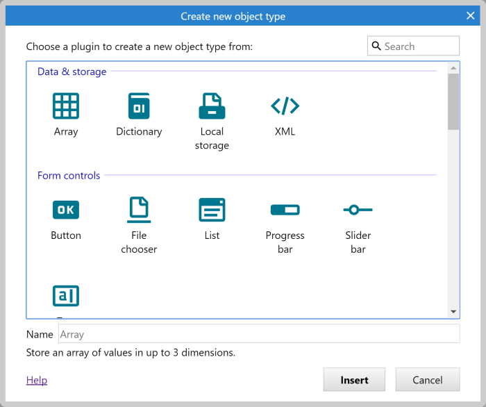
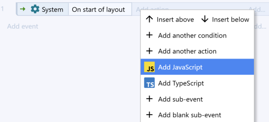
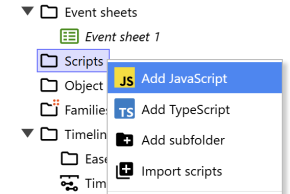

LAB 2 / OPEN VS CODE BESIDE THIS GUIDE
One click.
Your first response.
Make one button change one sentence in your own webpage. Understand it, change it and test it.
HTML puts the paragraph and button on the page. CSS controls their appearance. JavaScript gives the button an action. Today we connect those three things.
A workshop, not a speedrun. You can stop with one working response. No AI or terminal is required.
Start with your Lab 1 page Need a blank starting point? Download the starter
Construct scripting is kept in an optional section. It is separate from this first webpage exercise.
STEP 1 / HTML FIRST
Open the page you already made.
- Keep a copy of your Lab 1 folder before editing it. In VS Code, choose File > Open Folder and open that folder.
- Open index.html. Look for the
<body>and its closing</body>. The things visitors see belong between them. - Add the paragraph and button below inside the body. Use each id only once. If you already have an element with that id, adapt it instead.
- Save with Ctrl+S on Windows or Cmd+S on Mac. Open Show Preview with Microsoft Live Preview.
<p id="story" aria-live="polite">I know this place.</p>
<button id="future" type="button">Show another perspective</button>p is a paragraph. button is a button. Each id is a unique name JavaScript can use to find that element.
What you should see: your sentence and button. Clicking does nothing yet. We have built the controls, but have not given them instructions.
What do p, button and id mean?
<p> holds a paragraph. <button> creates a button. The words between its opening and closing tags are its label.
id="future" names this particular button so JavaScript can find it. Change the label in VS Code, save and check the preview. Keep the id unchanged.
I do not have a page or cannot find Preview.
Use the blank starter. Extract the zip, then open the my-first-interaction folder in VS Code. The solution folder is a separate completed reference. For Live Preview installation and its toolbar, follow the VS Code setup guide.
See the finished reference. Your own files are the ones you will edit.
First time in VS Code? Choose File > Open Folder and select your project folder. Explorer is the file list on the left. Click index.html to open it in the middle.
Find <body> and </body>. Put the example between them, below your existing content. Leave your existing page in place. Save with Ctrl+S on Windows or Cmd+S on Mac.
Open the setup guide if Live Preview is not installed. Preview shows the page; the editor shows the code you change.
STEP 2 / TWO FILES, ONE PAGE
Tell the page where its JavaScript lives.
- In VS Code's Explorer, create a file called story.js in the same folder as index.html. The ending is
.js, not.js.txt. - In index.html, add this line before
</head>. If the starter already contains it, keep that one line.
<script src="story.js" defer></script>your-project/ index.html story.js
src="story.js" names the file to load. defer lets the browser finish reading the HTML before it runs that file. The paragraph and button will then be available to find.
VS Code edits and saves the files. The browser in Live Preview runs the JavaScript.
Check: both files sit beside each other in Explorer. Save index.html. An empty story.js is fine for now; the button still has no action.
Why does the script go in head with defer?
<head> contains information about the page. <body> contains its visible content.
src="story.js" points to your JavaScript file. defer lets the browser finish reading the HTML before running that file, so the paragraph and button exist when the code looks for them.
Compare the filename with Explorer in VS Code. A different spelling or folder means the browser cannot load that file.
I am starting with no HTML file.
This is the whole starter page. Use it in a new folder, rather than replacing your existing project.
<!doctype html>
<html lang="en">
<head>
<meta charset="utf-8">
<meta name="viewport" content="width=device-width, initial-scale=1">
<title>Another perspective</title>
<script src="story.js" defer></script>
</head>
<body>
<h1>A place I know</h1>
<p id="story" aria-live="polite">I know this place.</p>
<button id="future" type="button">Show another perspective</button>
</body>
</html>
Create the file: in Explorer, right-click your project folder, choose New File, type story.js and press Enter. Click its name to open it. It should be empty before the next step.
The two tabs are two files in the same project. Put the script connection in index.html and the click instructions in story.js.
STEP 3 / FIND, LISTEN, CHANGE
Give your button one job.
Open story.js. Put this code in that file and save. A .js file contains JavaScript, so leave out the HTML <script> tags.
const story = document.querySelector("#story");
const button = document.querySelector("#future");
function revealStory() {
story.textContent = "Someone else remembers this place differently.";
}
button.addEventListener("click", revealStory);
Try it now: reload Live Preview if needed, then click Show another perspective. The paragraph should change. The function waits for your click.
READ THE CODE FROM TOP TO BOTTOM
const story = document.querySelector("#story");Find the paragraph.documentis the page.querySelector("#story")finds the element whose id is story.const storygives that element a name in our JavaScript. We can change its text while keeping the same reference.const button = document.querySelector("#future");Find the button. We use the same method, with the button's id. These two lines find things; they do not change what a visitor sees.function revealStory() { ... }Name an action. A function is a set of instructions we can run. The braces{ }enclose this function's instructions. Its name here is revealStory.story.textContent = "Someone else remembers this place differently.";Change the paragraph's words.textContentis its text.=sets it to the sentence on the right. The quotation marks mean this value is text.button.addEventListener("click", revealStory);Wait for the click. When this button receives a click, run revealStory. We pass the function's name here, without(), so it can run later.
What are the punctuation marks doing?
- A dot accesses something on an object:
story.textContentmeans the story element's text. - Parentheses hold inputs when a function is called:
querySelector("#story"). - The comma separates the event name and the function in addEventListener.
- The semicolon ends each statement in this example. Keep the quotes, parentheses and braces paired.
revealStory()calls the function now.revealStoryin the listener tells it which function to call when a click happens.
Click again. The same sentence stays there because the same instructions run again. Reload the page to return to the initial HTML sentence.
Continue: make one deliberate changeSTEP 4 / YOUR WORDS, YOUR TEST
Make the response belong to your project.
- In index.html, replace I know this place. with your own starting sentence. Choose a place, feeling or question from your project.
- In story.js, replace the sentence inside quotation marks with another perspective. Keep the quotation marks and the rest of the mechanism.
- Change the button's label in index.html so it tells the visitor what they can do.
- Save both files. Reload the preview. Say what you expect before clicking, then compare it with what actually happens.
- Before the first click, the page shows your starting sentence.
- After the click, the page shows your new sentence.
- A second click repeats the same action. It does not return to the first sentence yet.
Use Tab to focus the button, then Enter or Space to activate it. Check the page at a narrow preview width. Keep your CSS from Lab 1.
Your note: I wanted the visitor to ____. The click changed ____. My second click ____. I chose these words because ____.
One working response is enough to continue with your own project. An AI tool is optional.
Optional: make a second click bring the first sentence back.
This adds state: a value that remembers which sentence is showing. Try the optional Signal Control Room when the first click makes sense. You can leave this challenge for later.
My first click does nothing: open the help drawer
WHEN THE CLICK DOES NOTHING
Check one connection at a time.
- Button missing: put the button inside the body in index.html.
- Click does nothing: save story.js and check that the script connection names that exact file.
- Element not found: match id="story" with "#story" and id="future" with "#future". Keep defer on the script line.
- Code stops: compare quotation marks, braces and parentheses with the example. Check the browser Console for an error.
Show Ingrid the two files, what you expected and what happened.
Keep learning when you want to.
MDN: What is JavaScript? explains how HTML, CSS and JavaScript work together.
MDN: A first splash into JavaScript is a longer number-guessing-game tutorial for a later session. It introduces several ideas together; it is optional reading here.
Optional later: use JavaScript in Construct
The browser exercise above is complete. These older steps are kept as an extra route for students who want scripting. The main Construct labs use event sheets and begin with Mapping.
STEP 05
Build the same scene in Construct.
TOOL CHANGE / WEBPAGE → GAME ENGINE
Meet Construct 3 before you open it.
Construct 3 is a game-making application that runs in your browser. You place objects in a scene and give them rules using an event sheet. You can also add JavaScript.
The scene you arrange: text, buttons, characters and backgrounds.
The settings for the selected object: its text, size, position and other options.
The rules: when the button is clicked → change the text.
Why switch? You will rebuild the same interaction in another tool. The idea stays the same; how you find objects and run code changes. Construct objects are not HTML elements, so you will use Construct’s runtime instead of document.querySelector.
- Save your working webpage. Keep VS Code open.
- Open Construct in a separate browser tab.
- Create a project, place your Text and Button, then open its event sheet.
The school’s Pro code is in Alinta’s “Construct 3 Code and more!” announcement. Use the interface guide if a panel is missing.
Open the real Construct editor ↗
- Choose New project. Name it
My story interaction. - In Layout 1, double-click empty space. Search for Text, insert it and place it inside the visible viewport. Keep its object type name Text.
- In Properties, set its text to I hear rain at the bus stop. Make the box wide and tall enough for your sentence.
- Insert a Button the same way. Set its displayed text to See a possible future.

Need help finding Layout, Properties or Event sheet? See the labelled interface and basic Construct guide.
Check before continuing: Exactly one Text object named Text and one Button are in the first layout.
STEP 06
Move the idea into a JavaScript action.
In VS Code, create construct-action.js beside your other files. Paste these two lines and save. This file holds the snippet you will copy into Construct.
const futureText = "In 2040, this stop plays memories left by strangers.";
runtime.objects.Text.getFirstInstance().text = futureText;| Webpage | Construct |
|---|---|
| HTML paragraph with id="story" | Text object named Text |
| JavaScript click listener | Button → On clicked condition |
| story.textContent = futureText | runtime.objects.Text.getFirstInstance().text = futureText |
The future sentence stays yours. Construct supplies runtime; a plain webpage does not. HTML markup and document.querySelector are not how you address this Construct Text object.
- Open Event sheet 1. Select Add event → Button → On clicked.
- On that row, open Add… to the right of Add action. Choose Add JavaScript.
- Paste only the two lines from
construct-action.jsinto the code editor.

Code reference: Text’s text property. Here getFirstInstance() selects the first Text instance; this exercise deliberately uses only one.
Check before continuing: The JavaScript sits on the Button / On clicked row. If adapting your earlier project, remove its old Set text action so only this action changes the text.
STEP 07
Preview, personalise and save.

- Select Preview, then click your button. The future sentence should appear.
- Return to the JavaScript action and replace the sentence with your own observation imagined in a future setting. Preview again.
- Choose Menu → Project → Save as → Download a copy. Keep the
.c3pin your Desktop project folder and reopen it to check it.
Choose an ordinary place, sound or habit you know. You decide what to share. No generative AI is needed. Continue to follow your assignment’s requirements.
Check before continuing: Your saved Construct project changes text when clicked. Editing construct-action.js in VS Code does not update the pasted action automatically: copy your changes across again.
You can stop here. You have used JavaScript in both a webpage and Construct. The next steps show how to work with complete script files.
CHECKPOINT / CONSTRUCT
Run Preview, test the button, save your Construct project and check that you can reopen it.
Optional practice. Return to your current lab project when you are ready.
STEP 08
Optional: import a complete .js file.
In VS Code, create main.js in your exercise folder. Save this code:
runOnStartup(runtime => {
runtime.addEventListener("beforeprojectstart", () => {
runtime.objects.Text.getFirstInstance().text =
"I hear rain at the bus stop. What could this place become?";
});
});- In Construct’s Project Bar, right-click the Scripts folder.
- Choose Import scripts and select your saved
main.js. - Select the imported file. In Properties → Purpose, select Main script. Its name appears bold.
- Preview from the first layout. The longer starting sentence should appear before you click. Your existing button action still reveals the future.

The startup callback waits for beforeprojectstart, when objects exist. Only one file can be the main script. Use this in the fresh exercise project; preserve an existing main script in other projects.
Check before continuing: The imported file is under Scripts, has Purpose Main script, and changes the starting text. Importing makes a project copy; later VS Code edits are not automatically linked.
STEP 09
Optional: keep editing the script in VS Code.
For repeated editing, Construct documents a folder workflow. Open the official external-editor walkthrough ↗.
- Save your Construct project as a folder project, using the project-folder option under Save as. Choose a new empty folder such as
Desktop/my-construct-project. A downloaded.c3pis not a folder project. - Right-click Scripts in Construct’s Project Bar. Enable Auto reload all on preview.
- In VS Code, use File → Open Folder… to open that project’s
scriptssubfolder. Open itsmain.js, not the earlier source copy. - Edit the starting sentence, save, return to Construct and select Preview.
Keep editing this file in VS Code: auto-reload can overwrite unsaved edits made inside Construct. It updates script files, not snippets pasted into events. If folder saving is unavailable in your browser, use the copy/paste workflow above.
Check before continuing: A saved change in the project’s scripts/main.js appears when you preview in Construct. No manual recopying is needed for that file.
WHEN SOMETHING DOES NOT WORK
Find the missing connection.
The webpage button does nothing.
Save both files. Check that index.html and story.js share a folder, that the script filename matches, and that the ids are story and future. Reload Live Preview and click again. Compare with the downloadable starter.
“runtime is not defined” appears.
You are running Construct code outside Construct. Live Preview runs index.html with story.js. Run construct-action.js as a Construct event action, and main.js as the Construct main script.
Construct cannot find Text, or the text is blank.
Check the object type name is exactly Text, including the capital T, with one instance in the first layout. Its box must be inside the visible viewport, large enough, and have a readable text colour.
The text changes before I click.
The two-line action may be in a standalone script block, which can run every tick. Place it as an action on Button / On clicked. The optional main.js intentionally changes only the starting text.
I changed a VS Code file, but Construct has not changed.
A pasted snippet or imported file is a copy. Paste updated snippets again. For ongoing script-file edits, follow step 9 and edit the file inside the saved Construct project’s scripts folder.
Construct reports a scripting limit.
The Free edition has scripting limits. Keep this exercise small, or use the course’s existing access if supplied. You can also complete the event-sheet-only interaction. See the current official edition comparison.
The browser exercise above is complete. These older steps are kept as an extra route for students who want scripting. The main Construct labs use event sheets and begin with Mapping.
The browser exercise above is complete. These older steps are kept as an extra route for students who want scripting. The main Construct labs use event sheets and begin with Mapping.
The browser exercise above is complete. These older steps are kept as an extra route for students who want scripting. The main Construct labs use event sheets and begin with Mapping.
The browser exercise above is complete. These older steps are kept as an extra route for students who want scripting. The main Construct labs use event sheets and begin with Mapping.